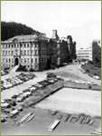
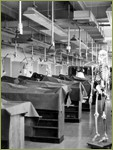

ARCHITECTURE
Parnassus CampusAffiliated Colleges
Dentistry
Medicine
Nursing
Pharmacy
Hospitals
Medicine

Medical School, 1940s

Medical Sciences - Anatomy lab, 1950s

Medical Sciences - Physiology lab, 1950s
{% include footer.html %}